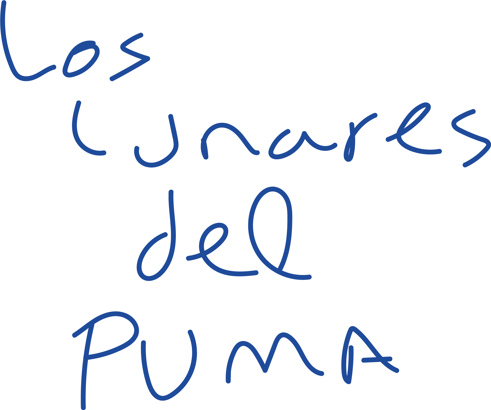

Teaser
Uma primeira entrada no universo de Los lunares del Puma.
1 min 25 s · Legendas em portuguêsDescarregar no Drive · 11 MB ↗
Dança · som · ensaio performativo

O que acontece quando o sapateado flamenco se desenvolve na horizontal e em inversão?
Hip hop · flamenco · dança contemporânea · Performance
Continuar a descer ↓Los lunares del Puma nasce da escuta: Adrián Vega presta atenção ao seu próprio som, explora as suas cadências e reconhece no corpo um património intercultural que resulta do encontro entre o hip hop e o folclore.
A peça tem como eixo o sapateado flamenco, trabalhado como matéria rítmica e poética que se funde com a corporalidade do breaking e se expande para as texturas da dança contemporânea. O sapateado desenvolve-se na horizontal, na queda e na inversão. A partir desse território, a peça ensaia uma resposta à pergunta sobre quanto flamenco habita o corpo de Vega e como se aproximar desta tradição sem cair no estereótipo.
Nessa fricção amistosa surgem resíduos, marcas e vestígios que configuram uma presença cénica singular: o Puma. Uma figura que dá nome à diferença e propõe uma forma de se situar quando a resposta não é «sou flamenco», mas «sou um Puma».
As pintas são o habitat desta figura. São também manchas. Podem ainda ser janelas através das quais se observam, ativam e reproduzem memórias do movimento. Ritmo, compasso e pulsação configuram uma paisagem sonora e visual que revela o vestígio do gesto e a intensidade da sua vibração.
Com esta peça, Adrián Vega propõe uma experiência próxima e visceral no âmbito da sua investigação sobre as danças de ida e volta: um encontro entre a memória do corpo e a vibração do presente.


Um espaço para escutar.
Los lunares del Puma propõe uma experiência voyeur em que qualquer espaço se pode transformar na sala de ensaio do artista. O compasso e o ritmo são os elementos mais marcantes da peça, que explora também o corpo humano e as suas texturas a partir da sonoridade do espaço em que se move.
Hoje, ser streamer é algo comum, a nossa relação com as câmaras faz parte do quotidiano e partilhar atividades e processos tornou-se um hábito. Adrián Vega aproveita a proximidade das ferramentas digitais para explorar o formato do videoblogue performativo, em que o virtual e o presencial convergem para estimular a curiosidade e aprofundar a ideia do processo criativo como resultado artístico em si mesmo.

«Los lunares del Puma nasce do processo de me escutar a mim próprio, de prestar atenção ao meu som, de compreender a interculturalidade e o património corporal e sonoro que construí graças ao encontro com a dança. As pintas são um habitat, uma janela por onde olhar. O puma é a minha adolescência: aceder aos códigos do Hip Hop e compreendê-los. É também a minha pós-adolescência, que me dá uma perspetiva contemporânea a partir da qual posso observar, conviver e deixar que o puma olhe e se relacione com os flamencos.»Adrián Vega
Uma primeira entrada no universo de Los lunares del Puma.
1 min 25 s · Legendas em portuguêsDescarregar no Drive · 11 MB ↗Versão site specific de Los lunares del Puma.
26 min 39 s · Legendas em portuguêsDescarregar no Drive · 169 MB ↗Registo da peça em Escena Xixón.
43 min 51 s · Legendas em portuguêsDescarregar no Drive · 297 MB ↗Um espaço de transmissão: partilhar a investigação corporal da peça através de um workshop.
Workshop · Transmissão · 1 min 33 sUm solo que pode habitar diferentes espaços.

Chamo-me Adrián Vega. Sou coreógrafo, formado no Institut del Teatre e professor convidado no Conservatório Profissional de Dança de Barcelona. Considero-me um artista pós-Hip Hop e os meus interesses e a minha prática coreográfica assentam na hibridação, na especulação sobre linguagens de movimento e no trabalho de chão.
Atualmente, graças à minha ligação ao flamenco e à música, interesso-me particularmente pela sonoridade do corpo e pela forma como pode ser utilizada na dança e na criação contemporânea. Em 2013, mergulhei nas artes performativas como cofundador do coletivo Iron Skulls Co, onde explorámos as relações entre as danças urbanas, a dança contemporânea e a teatralidade, desenvolvendo uma forma de trabalhar a que chamámos «theatrical breakin’». Os meus trabalhos foram selecionados para vários festivais internacionais, como Breakin’ Convention, em Londres, Summer Dance Forever, em Amesterdão, Summer Stage, em Nova Iorque, e Hip Hop International, em São Francisco.
Com Marina Pravkina, na plataforma Jazzbetween, e com Juan Carlos Lérida, em Postablao e Doce, trabalhei no laboratório de investigação empírica do flamenco: uma abordagem ao flamenco através da experiência que ajuda a alargar a nossa compreensão do folclore.
Os acontecimentos de 2020 mudaram a minha visão artística e comecei a explorar temas autobiográficos, flamenco invertido e pós-Hip Hop. Na minha primeira peça, «We are just okey», a ideia de cair levou-me a trabalhar o sapateado a partir da inversão e em completo silêncio, para compreender o som do impacto a partir da queda. Foi aí que surgiu o meu interesse pela performatividade, pelo quotidiano e pela estética brutalista. A minha segunda criação é uma coprodução do ICUB e do Mercat de les Flors no âmbito do programa de residência. A peça chama-se «Título provisional» e centra-se na motivação intrínseca da pré-adolescência num videoblogue performativo.
Em 2022, tornei-me residente na La Caldera, onde encontrei uma grande liberdade poética. Todo o meu trabalho anterior me alimentou para desenvolver o projeto «Los lunares del Puma», em que crio um longo solo, uma instalação e dois workshops centrados no processo criativo, em vez de no resultado, e em que posso falar da minha relação com as câmaras, da sonoridade do corpo e da apropriação cultural.
ContactoOlhares que acompanham a peça e a sua investigação.
Adrián partilha a origem de Los lunares del Puma e o encontro entre hip hop, flamenco e sapateado na horizontal.
O Festival Essencia apresenta a peça e uma investigação que atravessa o chão, a inversão e o som.
Flamenco invertido no Espai LaGranja: um workshop para partilhar a investigação entre danças urbanas e flamenco.
Uma reportagem sobre o Espai LaGranja que inclui o workshop Flamenco invertido entre as suas propostas. Página 4.
Los lunares del Puma integra o percurso de Dansa Metropolitana 2023 na La Caldera.
A apresentação de Los lunares del Puma em Cué, Llanes, no âmbito do ciclo R.A.R.U R.A.R.A.